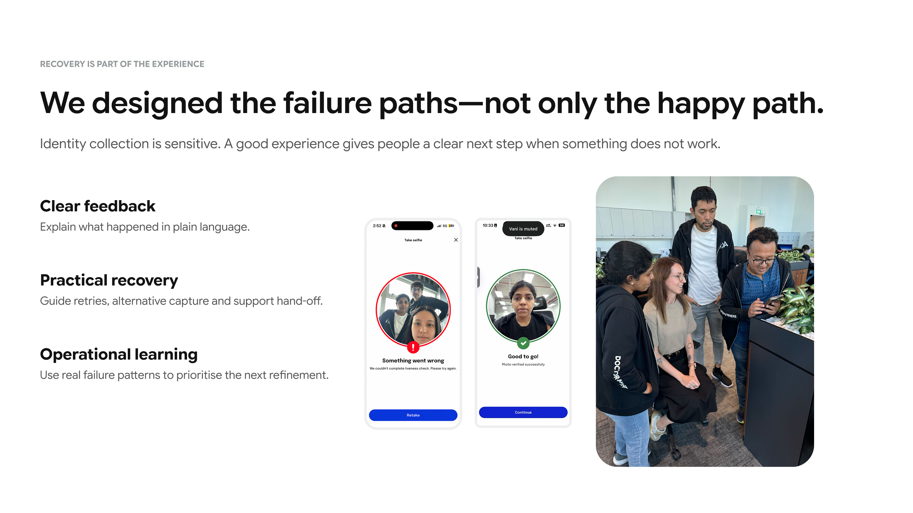

Doctor Anywhere
Identity-first onboarding
Making sure the right person reaches the right care.
01 · What was happening
Identity was happening too late.
We were establishing identity after other parts of the experience already depended on it.
02 · What changed
Move identity upstream.
Once identity became the first trusted input, account creation, coverage matching and care could resolve from the same foundation.
03 · System behaviour
Different people shouldn't experience system complexity.
Entry conditions change behind the interface. The patient still sees one understandable journey.
04 · The designed experience
One interface. Every meaningful state.
05 · Interaction craft
Details that made the journey feel easier.
06 · Recovery
Failure states are product states.
A failed selfie or ID scan is both high-friction and emotionally sensitive. Feedback explains what happened and offers a practical next step.

07 · What happened afterward
Identity became trust infrastructure—not another onboarding step.
For patients, benefits and care appear with less friction. For the product, identity, account, coverage and records now align downstream. Operationally, correctly matched B2B coverage no longer needs manual re-linking.